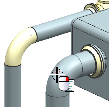
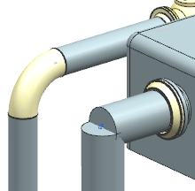
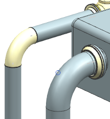
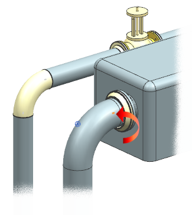

编辑上方折弯段的半径
-
右击上方管线段处的折弯管线控制点，然后选择指派拐角。

提示
如果您在查看或选择端口与管线控制点的选择过程中遇到任何问题，可以选择将型材显示样式更改为中心线。
您也可以将您的视图渲染样式更改为静态线框。
-
在拐角组中，输入下列数据：
拐角类型
= 折弯
方法
= 直径比
比率
= 2
-
点击确定。

NX 无法在这个拐角处应用这么大的折弯半径，您需要尝试小一些的折弯半径。
-
撤销折弯更改。
-
选择路径下拉菜单中的指派拐角
 。
。拐角管线控制点应该仍然是被选中的。
-
在拐角组中，输入下列数据：
拐角类型
= 折弯
方法
= 直径比
比率
= 1.5
-
点击确定。

这一次将检查到最小直线段长度违例。

-
点击完整违例文本
 。
。The straight length of the segment
is too short based on the diameter.
The current length is 36.150000,
the minimum length is 3239.0.
(管线直线段长度对于型材直径来说太短，
当前长度为36.150000，最小长度为3239.0。) -
关闭信息窗口。
您将在稍后再处理这个违例，现在暂时忽略它。
-
点击取消。